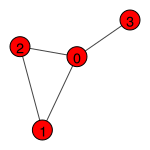

edge_list = [(0, 1), (1, 2), (0, 2), (0, 3)]Efficient Network Representation and Computing Paths
1 Convenient libraries for network analysis
The Python ecosystem offers several powerful libraries for network analysis, each with distinct strengths:
- networkx - a beginner-friendly library for network analysis
- igraph - a mature library with a wide range of algorithms
- graph-tool - specialized for stochastic block models
- scipy - efficient tools for analyzing large networks
Throughout this course, we’ll primarily use igraph, a mature and robust library originally developed for R and later ported to Python. While networkx is by far the most popular library, igraph offers several compelling advantages for serious network analysis: it provides more reliable algorithm implementations (avoiding persistent bugs found in some networkx functions like LFR benchmark and weighted degree assortativity), and its optimized C core delivers the performance needed for large-scale network computations.
Installing igraph
# Using pip (with plotting support)
pip install igraph cairocffi
# Using conda (recommended)
conda install -c conda-forge igraph cairocffi
# Alternative plotting backend
pip install igraph pycairo
# For development version
pip install git+https://github.com/igraph/python-igraph.gitNote: igraph requires compiled C libraries and plotting needs cairocffi or pycairo. Use conda for easier installation.
For advanced users comfortable with scipy, the csgraph submodule provides an excellent alternative that leverages one of Python’s most well-tested and optimized libraries. For example, csgraph.shortest_path and csgraph.connected_components offer high-performance implementations.

Create a graph
Let us create a graph of 4 nodes and 4 edges. Our edge list is given by
igraph has an object Graph that stores a graph and provides methods to manipulate and analyze the graph. To create a graph from an edge list, we can use the add_edges method.
import igraph
g = igraph.Graph() # Create an empty graph
g.add_vertices(4) # Add 4 vertices
g.add_edges(edge_list) # Add edges to the graph
# Plot the graph
igraph.plot(g, bbox=(150, 150), vertex_label=list(range(4)))
Shortest Paths
Let’s compute the paths between nodes 2 and 3.
g.get_all_simple_paths(2, to=3)[[2, 0, 3], [2, 1, 0, 3]]This method enumerates all possible simple paths between two nodes. This is OK for small networks but quickly becomes impractical for larger networks, as the number of paths increases exponentially with the size of the network.
Often, we are interested in the shortest path, which is the path with the smallest number of edges. The shortest path can be computed by using the get_shortest_paths method.
g.get_shortest_paths(2, to=3)[[2, 0, 3]]Note that there can be multiple shortest paths between two nodes. If we are interested in the “length” instead of the path itself, there is a more efficient function distances.
g.distances(2, 3)[[2]]Connected Components
In the simple network above, we can see that for every pair of nodes, we can find a path connecting them. This is the definition of a connected graph. We can check this property for a given graph:
components = g.connected_components()The components is a special object called VertexClustering in igraph. It has the following useful functions and attributes:
print("membership: ", components.membership) # the IDs of the component each node belongs to.
print("sizes: ", list(components.sizes())) # the number of nodes in each component.
print("giant: ", components.giant()) # a subgraph of the largest connected component.membership: [0, 0, 0, 0]
sizes: [4]
giant: IGRAPH U--- 4 4 --
+ edges:
0--1 1--2 0--2 0--3Exercise 01 🏋️♀️💪🧠
Now, let us add two nodes that are not connected to the existing graph, and call
connected_componentsagain. 🔗➕Call
get_shortest_pathsbetween the two new nodes in different connected components. 🛣️🔍Get the largest connected component. 🌐🏆
Directed networks
Let’s extend these ideas about paths and connected components to directed graphs.
edge_list =[(0, 1), (1, 2), (2, 1), (2, 3), (2, 5), (3, 1), (3, 4), (3, 5), (4, 5), (5, 3)]
g = igraph.Graph(directed=True)
g.add_vertices(6)
g.add_edges(edge_list)
igraph.plot(g, bbox=(250, 250), vertex_label=list(range(6)))
In directed graphs, edges and paths can be one-way. For instance, in our graph, you can go from node 0 to node 3, but not from 3 to 0.
print("From 0 to 3", g.get_all_simple_paths(0, to=3))
print("From 3 to 0", g.get_all_simple_paths(3, to=0))From 0 to 3 [[0, 1, 2, 3], [0, 1, 2, 5, 3]]
From 3 to 0 []The shortest path from 4 to 1 must take a longer route due to edge directions.
g.get_shortest_paths(4, 1)[[4, 5, 3, 1]]Directed networks have two kinds of connected components.
- Strongly connected components: Strongly connected means that there exists a direct path between every pair of nodes, i.e., that from any node to any other nodes while respecting the edge directionality.
- Weakly connected components: Weakly connected means that there exists a path between every pair of nodes when ignoring the edge directionality.
print(list(g.connected_components(mode="strong")))
print(list(g.connected_components(mode="weak")))[[0], [1, 2, 3, 4, 5]]
[[0, 1, 2, 3, 4, 5]]2 Clustering Coefficients
Now let’s see how to compute the clustering coefficients you learned about using igraph.
Let’s create a more interesting graph to demonstrate clustering:
# Create a graph with some triangles
edges = [(0, 1), (0, 2), (1, 2), # Triangle: 0-1-2
(0, 3), (3, 4), (3, 5), # Node 3 with two neighbors (4,5)
(4, 5), # Triangle: 3-4-5
(1, 6), (6, 7)] # Linear extension
g_cluster = igraph.Graph()
g_cluster.add_vertices(8)
g_cluster.add_edges(edges)
# Plot the graph
igraph.plot(g_cluster, bbox=(300, 200), vertex_label=list(range(8)))
Local Clustering Coefficient
The transitivity_local_undirected() function computes the local clustering coefficient for each node, returning a list of float values (one per node). It returns NaN for nodes with degree < 2.
# Local clustering coefficient for each node
local_clustering = g_cluster.transitivity_local_undirected()
print("Local clustering coefficients:")
for i, coeff in enumerate(local_clustering):
print(f"Node {i}: {coeff:.3f}")Local clustering coefficients:
Node 0: 0.333
Node 1: 0.333
Node 2: 1.000
Node 3: 0.333
Node 4: 1.000
Node 5: 1.000
Node 6: 0.000
Node 7: nanUnderstanding the values: - 1.0 = All neighbors are connected (perfect local clustering) - 0.0 = No neighbors are connected - NaN = Node has degree < 2 (clustering undefined)
Analyze how clustering values relate to actual neighborhood connectivity:
# Analyze clustering for specific nodes
for node in range(g_cluster.vcount()):
neighbors = g_cluster.neighbors(node)
degree = len(neighbors)
clustering = local_clustering[node]
print(f"Node {node}: degree={degree}, neighbors={neighbors}, clustering={clustering:.3f}")
if degree >= 2:
# Count actual triangles
possible_edges = degree * (degree - 1) // 2
actual_edges = 0
for i in range(len(neighbors)):
for j in range(i + 1, len(neighbors)):
if g_cluster.are_adjacent(neighbors[i], neighbors[j]):
actual_edges += 1
print(f" -> {actual_edges}/{possible_edges} neighbor pairs connected")
print()Node 0: degree=3, neighbors=[1, 2, 3], clustering=0.333
-> 1/3 neighbor pairs connected
Node 1: degree=3, neighbors=[0, 2, 6], clustering=0.333
-> 1/3 neighbor pairs connected
Node 2: degree=2, neighbors=[0, 1], clustering=1.000
-> 1/1 neighbor pairs connected
Node 3: degree=3, neighbors=[0, 4, 5], clustering=0.333
-> 1/3 neighbor pairs connected
Node 4: degree=2, neighbors=[3, 5], clustering=1.000
-> 1/1 neighbor pairs connected
Node 5: degree=2, neighbors=[3, 4], clustering=1.000
-> 1/1 neighbor pairs connected
Node 6: degree=2, neighbors=[1, 7], clustering=0.000
-> 0/1 neighbor pairs connected
Node 7: degree=1, neighbors=[6], clustering=nan
Average Local Clustering
The transitivity_avglocal_undirected() function computes the average local clustering coefficient directly, returning a single float value. It automatically ignores NaN values from low-degree nodes.
# Average local clustering (mean of local values)
avg_local_clustering = g_cluster.transitivity_avglocal_undirected()
print(f"Average local clustering: {avg_local_clustering:.3f}")
# Verify by manual calculation
import numpy as np
manual_avg = np.nanmean(local_clustering) # nanmean ignores NaN values
print(f"Manual calculation: {manual_avg:.3f}")Average local clustering: 0.571
Manual calculation: 0.571Global Clustering Coefficient
The transitivity_undirected() function computes the global clustering coefficient (transitivity), returning a single float value.
# Global clustering coefficient
global_clustering = g_cluster.transitivity_undirected()
print(f"Global clustering: {global_clustering:.3f}")
# Let's understand this calculation using supporting functions
# list_triangles() returns all triangles in the graph
triangles_count = len(g_cluster.list_triangles())
print(f"Number of triangles: {triangles_count}")
print(f"Triangles in graph: {g_cluster.list_triangles()}")
# Count connected triples (paths of length 2)
# degree(node) returns the degree of a specific node
triples = 0
for node in range(g_cluster.vcount()):
degree = g_cluster.degree(node)
# Each node with degree d contributes d*(d-1)/2 triples
if degree >= 2:
triples += degree * (degree - 1) // 2
print(f"Connected triples: {triples}")
print(f"Global clustering = 3 * {triangles_count} / {triples} = {3 * triangles_count / triples:.3f}")Global clustering: 0.462
Number of triangles: 2
Triangles in graph: [(0, 1, 2), (3, 4, 5)]
Connected triples: 13
Global clustering = 3 * 2 / 13 = 0.462Comparing Different Networks
We can use igraph’s built-in network generators: Graph.Full() creates complete graphs, Graph.Erdos_Renyi() creates random graphs, and Graph.Lattice() creates regular lattices.
# Create different network types for comparison
import numpy as np
# 1. Complete graph (everyone connected to everyone)
n_complete = 6
g_complete = igraph.Graph.Full(n_complete)
# 2. Random graph (Erdős–Rényi)
n_random = 20
p_random = 0.2
g_random = igraph.Graph.Erdos_Renyi(n_random, p_random)
# 3. Regular ring lattice (each node connected to k nearest neighbors)
n_ring = 20
k_ring = 4
g_ring = igraph.Graph.Lattice(dim=[n_ring], circular=True, nei=k_ring//2)
networks = {
"Complete": g_complete,
"Random": g_random,
"Ring Lattice": g_ring,
"Our Example": g_cluster
}
print("Clustering Comparison:")
print("-" * 60)
print(f"{'Network':<15} {'Avg Local':<12} {'Global':<12} {'Nodes':<8} {'Edges':<8}")
print("-" * 60)
for name, graph in networks.items():
avg_local = graph.transitivity_avglocal_undirected()
global_clust = graph.transitivity_undirected()
nodes = graph.vcount()
edges = graph.ecount()
print(f"{name:<15} {avg_local:<12.3f} {global_clust:<12.3f} {nodes:<8} {edges:<8}")Clustering Comparison:
------------------------------------------------------------
Network Avg Local Global Nodes Edges
------------------------------------------------------------
Complete 1.000 1.000 6 15
Random 0.178 0.125 20 32
Ring Lattice 0.500 0.500 20 40
Our Example 0.571 0.462 8 9 Small-World Network Example
The Graph.Watts_Strogatz() function creates small-world networks using the Watts-Strogatz model. The average_path_length() function computes the mean shortest path length across all node pairs.
# Create a small-world network (Watts-Strogatz model)
# Start with ring lattice, then rewire some edges randomly
n_ws = 30
k_ws = 6
p_rewire = 0.1
g_smallworld = igraph.Graph.Watts_Strogatz(dim=1, size=n_ws, nei=k_ws//2, p=p_rewire)
print("Small-World Network Analysis:")
print(f"Nodes: {g_smallworld.vcount()}, Edges: {g_smallworld.ecount()}")
print(f"Average local clustering: {g_smallworld.transitivity_avglocal_undirected():.3f}")
print(f"Global clustering: {g_smallworld.transitivity_undirected():.3f}")
print(f"Average path length: {g_smallworld.average_path_length():.3f}")
# Compare with random graph of same size and density
g_random_compare = igraph.Graph.Erdos_Renyi(n_ws, g_smallworld.ecount() * 2 / (n_ws * (n_ws - 1)))
print("\nCompared to random graph with same density:")
print(f"Random avg local clustering: {g_random_compare.transitivity_avglocal_undirected():.3f}")
print(f"Random global clustering: {g_random_compare.transitivity_undirected():.3f}")
print(f"Random average path length: {g_random_compare.average_path_length():.3f}")Small-World Network Analysis:
Nodes: 30, Edges: 90
Average local clustering: 0.361
Global clustering: 0.319
Average path length: 2.149
Compared to random graph with same density:
Random avg local clustering: 0.234
Random global clustering: 0.202
Random average path length: 2.0483 Exercise 02 🏋️♀️💪🧠
Let’s compute the average path length of a network from pre-existing data and check if how long on average it takes to go from any node to any other node.
- Select a network of your choice from Netzschleuder. For convenience, choose a network of nodes less than 5000.
- Download the csv version of the data by clicking something like “3KiB” under
csvcolumn. - Unzip the file and find “edges.csv”, open it with a text editor to familiarize yourself with the format.
- Load the data using
pandas. - Get the source and target nodes from the data to create an edge list.
- Construct a graph from the edge list, either using
igraphorscipy. - Compute the average path length
Hint: Finding all shortest paths is a qubic time operation with respect to the number of nodes, or simply put, it takes a long time to compute. So compute the “estimate” by sampling many pairs of nodes uniformly at random and computing the average path length.